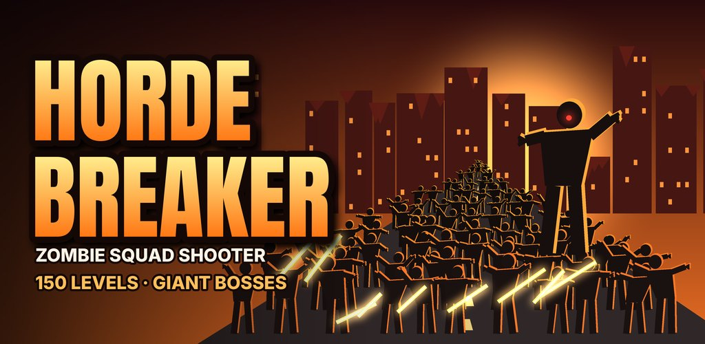

Vos données, simplement.
Horde Breaker est un jeu de tir contre des hordes de zombies. Retrouvez ici sa politique de confidentialité et la marche à suivre pour effacer vos données.
Votre progression et vos réglages restent sur votre téléphone. Aucun compte n'est créé, rien n'est envoyé à nos serveurs.
Confidentialité
Ce que le jeu enregistre, pourquoi, et ce qu'il ne fait pas.
Lire la politiqueSuppression
Effacer votre progression ou demander la suppression d'un échange avec le support.
Supprimer mes donnéesUne question ? Écrivez-nous : developpement.solution@gmail.com
Your data, simply.
Horde Breaker is a mobile shooter against zombie hordes. Here you will find its privacy policy and how to delete your data.
Your progress and settings stay on your phone. No account is created and nothing is sent to our servers.
Privacy
What the game stores, why, and what it does not do.
Read the policyDeletion
Erase your progress or request deletion of a support conversation.
Delete my dataQuestions? Email us: developpement.solution@gmail.com